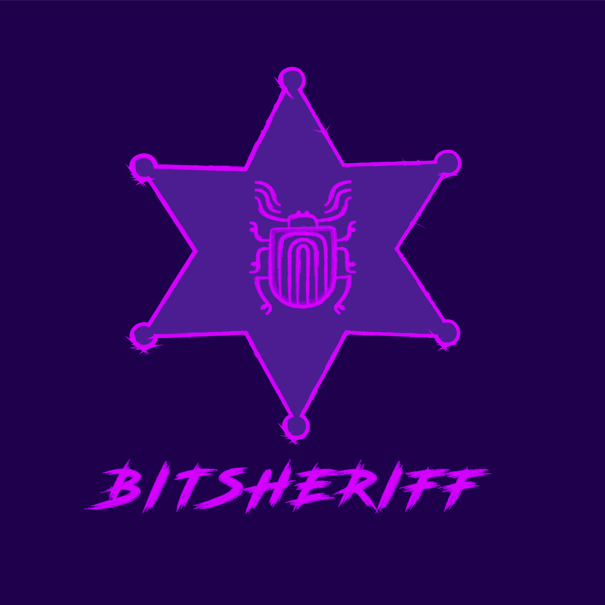

GitLab (Back-up)
Ko-fi
Mastodon
Matrix
Reddit
Read the blog
bitSheriff
hunting bugs in the wild wild web
GitHubGitLab (Back-up)
Ko-fi
Mastodon
Matrix
Read the blog
hunting bugs in the wild wild web
GitHub